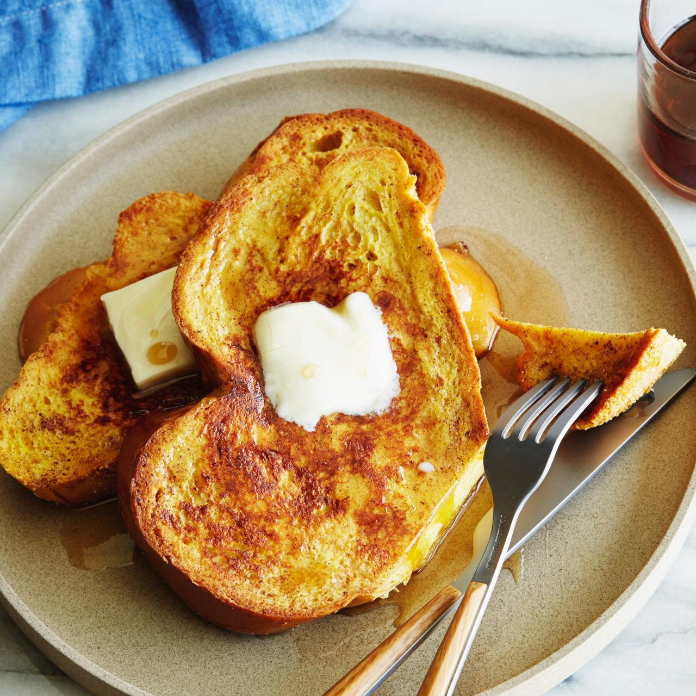

French Toast

Description
This fabulous French toast recipe works with
many types of bread - white, whole wheat,
brioche, cinnamon-raisin, Italian, or French!
Delicious served hot with butter and maple
syrup.
Ingredients
- 2/3 cup milk
- 2 large eggs
- 1 teaspoon vanilla extract (Optional)
- 1/4 teaspoon ground cinnamon (Optional)
- salt to taste
- 6 thick slices bread
- 1 tablespoon unsalted butter
Steps
- Gather all ingredients.
- Whisk milk, eggs, vanilla, cinnamon, and
salt together in a shallow bowl.
- Lightly butter a griddle or skillet and
heat over medium-high heat.
- Dunk bread in the egg mixture, soaking both
sides.
- Transfer to the hot skillet and cook until
golden, 3 to 4 minutes per side.
- Serve hot.